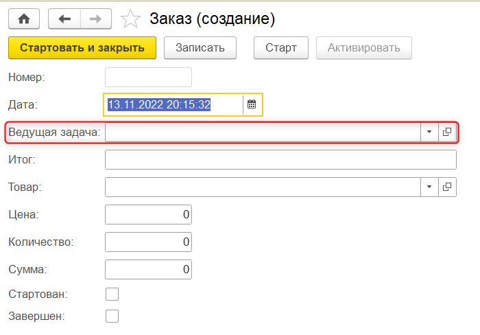
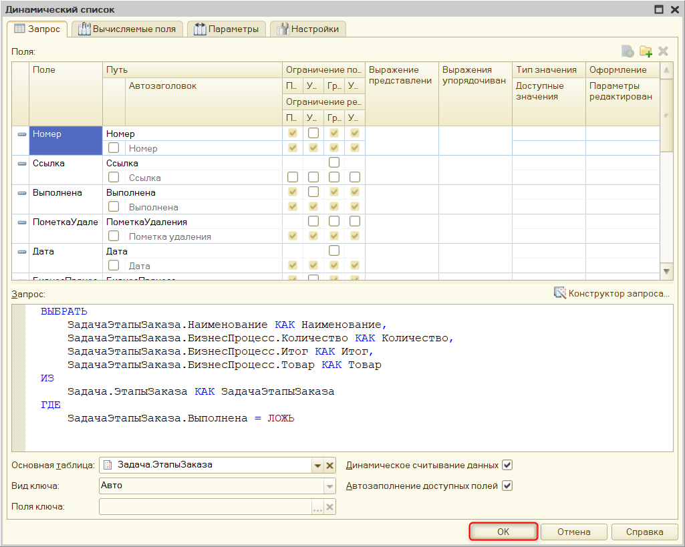

|
Удалить требуется только поле "Ведущая задача". Если при создании формы вы сняли галочку у этого элемента, то удалять его повторно не требуется. |
Тема занятия – настройка формы бизнес-процесса, задачи и начального экрана.
В рамках этого занятия мы выполним 4 задачи:
В данный момент в пользовательском режиме взаимодействие с бизнес-процессом и задачами выстроено не самым удобным образом. Например, форма бизнес-процесса имеет дополнительные поля, которые не нужны пользователю. Следовательно, их необходимо убрать (рис. 8.1).

Рис. 8.1. Форма бизнес-процесса
В форме задачи также необходимо убрать лишние поля и оставить только те, которые содержат полезную для игрока информацию (рис. 8.2).
Рис. 8.2. Форма задачи бизнес-процесса
Помимо удаления полей также настроим наборы кнопок, из которых состоит функционал форм.
Начнем с первой задачи и настроим форму бизнес-процесса. В окне конфигурации двойным кликом левой кнопки мыши откроем окно редактирования бизнес-процесса "Заказ" (рис. 8.3).
Перейдем на вкладку формы и добавим форму бизнес-процесса, нажав на кнопку "Добавить" (рис. 8.4).
Рис. 8.3. Открытие окна редактирования бизнес-процесса |
Рис. 8.4. Добавление формы бизнес-процесса |
В появившемся окне ничего не изменяем, оставляем выбор на пункте "Форма бизнес-процесса" и нажимаем "Далее" (рис. 8.5).
Теперь необходимо выбрать поля для бизнес-процесса. Набор полей будет следующим: "Номер", "Дата", "Итог", "Товар", "Цена", "Количество", "Сумма", "Стартован" и "Завершен". Галочку у поля "Ведущая задача" уберем. После того, как все поля выбраны, нажимаем на кнопку "Готово" (рис. 8.6).
Рис. 8.5. Настройка пользовательской формы бизнес-процесса |
Рис. 8.6. Выбор полей для пользовательской формы |
Если при выборе полей галочка напротив поля "Ведущая задача" не была убрана, то данное поле можно удалить в редакторе формы.
В открывшемся редакторе формы, в верхнем левом углу, выберете поле, которое необходимо удалить, и нажмите на кнопку "Удалить" (рис. 8.7).
Рис. 8.7. Удаление реквизита в редакторе форм
|
Удалить требуется только поле "Ведущая задача". Если при создании формы вы сняли галочку у этого элемента, то удалять его повторно не требуется. |
Далее настроим внешний вид формы. Бизнес-процесс создается автоматически, поэтому удалим набор кнопок. Для этого обратимся к командной панели и в палитре свойств уберем флажок "Автозаполнение" (рис. 8.8).

Рис. 8.8. Отключение автозаполнения командной панели
Бизнес-процесс создается автоматически, поэтому участие пользователя в нем не требуется.
Далее настроим расположение полей. Поля "Номер" и "Дата" объединим в горизонтальную группу. Для этого выберем поле "Номер" и нажмем по нему правой кнопкой мыши. В контекстном меню выберем пункт "Добавить" (рис. 8.9). В окне выбора типа элемента выберем пункт "Группа – Обычная группа без отображения" и нажмем "Ок" (рис. 8.10).
|
|
Рис. 8.9. Добавление группы |
Рис. 8.10. Выбор группировки полей |
Для удобства разработки присвоим данной группе название "ГруппаДатаНомер". Далее перенесем в данную группу поля "Дата" и "Номер". Для этого данные поля нужно выбрать и переместить в группу, зажав левую кнопку мыши (рис. 8.11).

Рис. 8.11. Группировка полей
Также изменим заголовки для этих полей. Полю "Номер" присвоим заголовок "Заказ №" (рис. 8.12).
Рис. 8.12. Присвоение заголовка полю "Номер"
Для поля "Дата" укажем заголовок "От" (рис. 8.13).
Рис. 8.13. Присвоение заголовка полю "Дата"
Расположение поля "Товар" сделаем выше, чтобы оно располагалось под только что созданной группой, а поле "Итог" перенесем на третье с конца место. Для этого их достаточно передвинуть в списке с помощью кнопок в верхнем левом углу (рис. 8.14).
Рис. 8.14. Перестановка полей на форме
В свойствах поля "Товар" укажем, что данное поле является надписью, так как его не требуется изменять. Однако для большей информативности поставим галочку у свойства "Гиперссылка" – это позволит открыть карточку товара прямо из формы бизнес-процесса при нажатии по этому полю (рис. 8.15).
Рис. 8.15. Изменение свойств поля "Товар"
Поля "Цена", "Количество" и "Сумма" также объединим в горизонтальную группу. Нажмем по полю "Цена" правой кнопкой мыши и в контекстном меню нажмем на кнопку "Добавить" (рис. 8.16). В выпавшем окне выберем пункт "Группа – Обычная группа без отображения" и нажмем "ОК" (рис. 8.17).
Рис. 8.16. Добавление группы для полей "Цена", "Количество" и "Сумма" |
Рис. 8.17. Выбор группировки полей |
Назовем данную группу "ГруппаДанныеКОплате" и перенесем в нее поля "Цена", "Количество" и "Сумма" (рис. 8.18).
Рис. 8.18. Группировка полей и переименование группы
Для полей "Цена", "Количество" и "Сумма" укажем вид – "Поле надписи", так как эти поля заполняются автоматически (рис. 8.19 – 8.21).
Рис. 8.19. Изменение вида поля "Цена"
Рис. 8.20. Изменение вида поля "Количество"
Рис. 8.21. Изменение вида поля "Сумма"
То же самое делаем с полем "Итог" (рис. 8.22).
Рис. 8.22. Изменение вида поля "Итог"
Поля "Стартован" и "Завершен" также объединим в группу, тип группы "Группа – Обычная группа без отображения" (рис. 8.23).
Рис. 8.23. Добавление группировки полей
Назовем данную группу "ГруппаСтартованЗавершен" и перенесем в нее поля "Стартован" и "Завершен" (рис. 8.24).
Рис. 8.24. Группировка полей и переименование группы
Также изменим заголовок поля "Стартован" на "Принят в работу" и изменим вид полей "Стартован" и "Завершен" на "Поле надписи" (рис. 8.25 – 8.26).
Рис. 8.25. Изменение заголовка и вида поля "Стартован"
Рис. 8.26. Изменение вида поля "Завершен"
Поля "Дата" и "Номер" заполняются автоматически в момент создания бизнес-процесса. Изменим их вид на "Поле надписи", чтобы пользователь не мог вносить изменения (рис. 8.27 – 8.28).
Рис. 8.27. Изменение вида поля "Номер"
Рис. 8.28. Изменение вида поля "Дата"
Обновим конфигурацию базы данных и запустим пользовательский режим.
Откроем любой заказ, чтобы проверить корректность отображения формы. Как можно увидеть, новая форма более удобна для пользователя. Все поля заполнены, кроме "Итог". Данное поле будет настроено позднее.
Так как данный заказ еще не выполнен, но уже стартовал, то поля "Стартован" и "Завершен" имеют значения "Да" и "Нет" соответственно (рис. 8.29).
Рис. 8.29. Форма заказа
Если же открыть уже выполненные заказы, то в поле "Завершен" будет значение "Да" (рис. 8.30).
Рис. 8.30. Форма завершенного заказа
Однако изменение вида поля на поле надписи – не единственный вариант отображения данных в форме, при котором пользователь не может вносить изменения.
Закроем пользовательский режим и вернемся в конфигуратор.
Выберем поле "Номер" и изменим вид поля на "Поле ввода" (рис. 8.31).
Рис. 8.31. Изменение вида поля "Номер"
Повторим данную операцию с каждым полем формы, кроме полей "Стартован" и "Завершен" – у них вид изменится на "Поле флажка" (рис. 8.32 – 8.39).
Рис. 8.32. Изменение вида поля "Дата"
Рис. 8.33. Изменение вида поля "Товар"
Рис. 8.34. Изменение вида поля "Цена"
Рис. 8.35. Изменение вида поля "Количество"
Рис. 8.36. Изменение вида поля "Сумма"
Рис. 8.37. Изменение вида поля "Итог"
Рис. 8.38. Изменение вида поля "Стартован"
Рис. 8.39. Изменение вида поля "Завершен"
Зажав клавишу Ctrl, выделим все поля в форме и в палитре свойств поставим галочку напротив свойства "ТолькоПросмотр" (рис. 8.40).

Рис. 8.40. Изменение свойства всех полей сразу
Обновим конфигурацию базы данных и запустим режим пользователя.
Откроем любой заказ, чтобы проверить настройки (рис. 8.41).

Рис. 8.41. Итоговая форма заказа клиента
Данный вариант формы является финальным и больше изменяться не будет. Далее приступим ко второй задаче – реализации формы задачи.
Закроем пользовательский режим и вернемся в конфигуратор.
Приступим к решению второй задачи и добавим форму элемента "ЭтапыЗаказа". Для этого в дереве конфигурации откроем задачи и далее развернем "ЭтапыЗаказа". После этого щелкнем правой кнопкой мыши по пункту "Формы" и в открывшемся меню выберем пункт "Добавить" (рис. 8.42).

Рис. 8.42. Добавление пользовательской формы
В появившемся окне мы не вносим никаких изменений и нажимаем кнопку "Далее" (рис. 8.43). В следующем окне необходимо выбрать поля, которые останутся в новой форме. Это будут поля "Наименование" и "Дата". Нажмем на кнопку "Готово", чтобы перейти в редактор формы (рис. 8.44).
Рис. 8.43. Настройка пользовательской формы |
Рис. 8.44. Выбор полей формы |
После открытия редактора формы выберем поле "Наименование" и в заголовке напишем "Этап" (рис. 8.45).
Рис. 8.45. Изменение заголовка поля "Наименование"
Для поля "Дата" в заголовке напишем "От" (рис. 8.46).
Рис. 8.46. Изменение заголовка поля "Дата"
Объединим поля "Дата" и "Наименование" в одну группу. Для этого нажмем на кнопку "Добавить" и в появившемся окне выберем тип группы "Группа – Обычная группа без отображения" (рис. 8.47).

Рис. 8.47. Добавление группы
Изменим название группы на "ГруппаНаименованиеДата" и перенесем поля в группу (рис. 8.48).
Рис. 8.48. Группировка полей
Для наглядности выведем пользователю информацию о товаре, цене, количестве и сумме, а также текущем итоге бизнес-процесса. Данную информацию можно получить через ссылку.
Так как задача уже ссылается на бизнес-процесс, в разделе "Реквизиты" в правой верхней части экрана развернем главный реквизит "Объект". Он представляет собой все реквизиты, которые есть у механизма "Задача". В нем раскроем реквизит "Бизнес-процесс", поскольку он ссылочного типа. Добавим поля в форму, выделив нужный элемент и перенеся его на нашу форму. Для ускорения процесса можно выделить все нужные реквизиты через клавишу Ctrl и перенести все сразу (рис. 8.49).
Рис. 8.49. Добавление реквизитов на форму
Определим внешний вид новых элементов. Добавим их в группу. Нажмем на любой элемент, а затем – на кнопку "Добавить". Тип группы "Группа – Обычная группа без отображения", нажмем на кнопку "ОК" (рис. 8.50).
Рис. 8.50. Добавление группы
Перенесем реквизиты "Цена", "Количество" и "Сумма" в группу и назовем ее "ГруппаЦенаКоличествоСумма" (рис. 8.51).
Рис. 8.51. Группировка полей и переименование группы
Все элементы, полученные из бизнес-процесса, не могут быть изменены пользователем, так как они получены через ссылку. Следовательно, нет необходимости вносить ограничение на их изменение.
Теперь изменим командную панель. Для начала отключим у нее автозаполнение (рис. 8.52).
Рис. 8.52. Отключение автозаполнения у командной панели
Самостоятельно определим в командную панель команду "Выполнено, закрыть". В правой части редактора форм переходим на вкладку "Команды", затем – на вкладку "Стандартные команды". Далее развернем пункт "Форма", выделим нужную команду и перенесем ее в командную панель (рис. 8.53).
Рис. 8.53. Добавление команды
В заголовке команды укажем "Выполнить этап" и поставим галочку напротив пункта "КнопкаПоУмолчанию", чтобы визуально выделить команду для пользователя (рис. 8.54).
Рис. 8.54. Настройка команды
Обновим конфигурацию базы данных и запустим пользовательский режим.
Откроем этапы заказа и выберем в списке любой этап. Благодаря ссылочному типу данных поля в карточке уже заполнены (рис. 8.55).
Рис. 8.55. Обновленная форма этапа заказа
Перейдем к третьей задаче, в рамках которой необходимо изменить начальную страницу. В данный момент на ней можно только открыть магазин. Но было бы намного удобнее, если бы список текущих заказов также отображался на форме начального экрана.
Закроем пользовательский режим и вернемся в конфигуратор.
В дереве конфигурации открываем "Общее", затем "Общие формы", откроем форму "НачальнаяСтраница" (рис. 8.56).
Рис. 8.56. Форма начальной страницы
Данные в формате списка и определяются как динамический список, который выстраивается через запрос к информационной базе. Чтобы добавить такой список, добавим реквизит формы и назовем его "АктивныеЗаказы", тип данных – "ДинамическийСписок" (рис. 8.57).

Рис. 8.57. Добавление динамического списка
Чтобы динамический список знал, откуда брать информацию, необходимо указать "ОсновнуюТаблицу" на вкладке "Объект". В качестве основной таблицы укажем "ЭтапыЗаказа" (рис. 8.58).
Рис. 8.58. Выбор основной таблицы для динамического списка
Итак, у нас выстраивается структура данных, и появляются соответствующие колонки. Однако полей появилось больше, чем нужно. Пользователю нужно выводить только реквизиты "Товар", "Количество" и "Итог", которых сейчас нет в структуре данных (рис. 8.59).
Рис. 8.59. Структура динамического списка
Для получения доступа к нужным реквизитам откроем палитру свойств динамического списка "АктивныеЗаказы" и на вкладке "Объект" поставим галочку напротив свойства "ПроизвольныйЗапрос". Таким образом изменится структура чтения данных из списка задач (рис. 8.60). Настроим произвольный запрос, открыв настройку списка (рис. 8.61).
Рис. 8.60. Включение произвольного запроса |
Рис. 8.61. Открытие настройки списка |
В открывшемся окне отображается консоль запросов. Она удобна в данном случае, поскольку будет видно, какие поля будут использоваться в динамическом списке. Для начала откроем конструктор запроса (рис. 8.62).
Рис. 8.62. Открытие конструктора запроса
В левой части консоли запросов видим список полей. Необходимо убрать все поля, кроме "ЗадачаЭтапыЗаказа.Наименование". Выберем любое поле и нажмем на стрелочку влево. Повторим, пока не останется только поле "Наименование" (рис. 8.63).
Рис. 8.63. Исключение полей из конструктора запросов
Добавим в запрос поля "Товар", "Количество" и "Итог" из поля "Бизнес-процесс", прочитав их по ссылке.
Раскроем "ЗадачаЭтапыЗаказа", затем откроем "БизнесПроцесс" и двойным нажатием левой кнопки мыши добавим необходимые поля (рис. 8.64).
Рис. 8.64. Добавление полей в конструктор запроса
Однако при таком запросе на начальном экране будут выводиться все этапы заказов, даже те, которые давно были выполнены. Для удобства добавим к запросу условие, которое поможет выводить только этапы незавершенных заказов.
Перейдем на вкладку "Условия", выберем поле "Выполнена" и перенесем его в поле условий. Поставим галочку в ячейке "Произвольное выражение" и изменим значение условия на "ЛОЖЬ" (рис. 8.65).
Рис. 8.65. Составление условия запроса
Также укажем псевдонимы для полей, поскольку сейчас они могут быть не очень понятны для пользователя.
Перейдем на вкладку "Объединение/Псевдонимы" и уберем конструкцию "БизнесПроцесс" у полей. После чего нажмем "Ок" (рис. 8.66). Нажимаем "ОК" уже в консоли запросов, чтобы закрыть ее (рис. 8.67).
 |
|
Рис. 8.66. Создание псевдонимов для полей |
Рис. 8.67. Закрытие консоли запросов |
Теперь динамический список готов к переносу на начальную страницу. Удерживая "АктивныеЗаказы" левой кнопкой мыши, перенесем его на форму. На вопрос о добавлении новых колонок ответим "Да" (рис. 8.68).
Рис. 8.68. Добавление динамического списка на форму начальной страницы
Необходимо изменить порядок колонок в новой таблице. Раскроем "АктивныеЗаказы" и переместим некоторые поля. Порядок колонок будет следующий: колонку "Наименование" переносим в самое начало, затем идут колонки "Дата", "Товар", "Количество" и "Итог". "Пометка на удаление", "Ссылка" и "СтандартнаяКартинка" необходимо удалить с формы (рис. 8.69).
Рис. 8.69. Перечень колонок таблицы динамического списка
Список этапов заказов должен интерактивно обновляться. Выберем "АктивныеЗаказы" в элементах интерфейса и в палитре свойств перейдем на вкладку "Использование". Поставим галочку напротив свойства "АвтоОбновление", "ПериодАвтоОбновления" установим на 5 секунд (рис. 8.70).
Рис. 8.70. Установка динамического обновления списка
Обновим конфигурацию базы данных и запустим пользовательский режим.
На начальном экране появился список незавершенных заказов. Нажмем на кнопку "Открыть магазин" три раза. Через 5 секунд в списке появятся новые заказы (рис. 8.71).
Рис. 8.71. Проверка динамического обновления списка
Сейчас |
Должно быть |
Четвертая задача сводится к доработке механизма открытия магазина. Настоящий магазин открывается и через некоторое время закрывается, а не открывается несколько раз для получения соответствующего количества заказов. Потребуется поменять логику работы магазина, а также добавить возможность его закрыть. Закроем пользовательский режим и вернемся в конфигуратор. |
|
Добавим команду на форму начального экрана, которую назовем "ЗакрытьМагазин". Добавим команду на форму, перетащив ее на команду "ОткрытьМагазин", чтобы они находились рядом (рис. 8.72).
Рис. 8.72. Добавление команды "ЗакрытьМагазин"
Для удобства переместим данную кнопку под кнопку "ОткрытьМагазин". Для этого выберем кнопку "ЗакрытьМагазин" и нажмем на синюю стрелочку вниз (рис. 8.73).
Рис. 8.73. Перенос кнопки "ЗакрытьМагазин"
Необходимо настроить новую команду. Откроем палитру свойств и в строке "Действие" создадим обработчик на клиенте с помощью кнопки "Открыть" (рис. 8.74).

Рис. 8.74. Создание обработчика команды "ЗакрытьМагазин"
Необходимо изменить логику в данном модуле. Сейчас при нажатии на кнопку "ОткрытьМагазин" единожды выполняется фоновая процедура "ГенераторПосетителей". Нужно, чтобы она выполнялась неоднократно.
Определим для этого отдельную клиентскую процедуру в новой области "СлужебныеПроцедурыИФункции".
Добавим новую процедуру с директивой на клиенте. Процедура будет вызывать фоновую процедуру, которая будет доработана позже.
В процедуре "ОткрытьМагазин" необходимо генерировать посетителей с каким-то интервалом. Для этого используем механизм "ПодключитьОбработчикОжидания". Для начала интервал будет равен 5 секундам.
В процедуре "ЗакрытьМагазин" необходимо прервать поток посетителей. Воспользуемся механизмом "ОтключитьОбработчикОжидания"
В итоговом варианте код модуля общей формы будет выглядеть следующим образом:
Для доработки фоновой процедуры откроем общий модуль "ФоновыеПроцедуры" (рис. 8.75).
Рис. 8.75. Открытие общего модуля "ФоновыеПроцедуры"
В данном модуле создадим процедуру "ГенерацияПосетителейФоном", на которую ссылались ранее в процедуре "ЗапуститьГенерациюПосетителей()".
Обновим конфигурацию базы данных и запустим пользовательский режим.
Теперь при нажатии кнопки "Открыть магазин" заказы будут генерироваться автоматически до того момента, пока не будет нажата кнопка "Закрыть магазин" (рис. 8.76).
Рис. 8.76. Автоматическая генерация заказов посетителей
На этом восьмое занятие окончено!
На этом занятии мы настроили формы бизнес-процесса, задачи, вывели на начальный экран список актуальных для игрока заказов, а также доработали алгоритм поступления заказов, благодаря которому заказы поступают с определенной периодичность, когда магазин открыт.
В будущем заработок будет выстраиваться на основании рейтинга магазина. Реализацию рейтинга магазина рассмотрим на следующем занятии.
Это нужно запомнить |
|
|
Для того чтобы вывести список на форму со своими собственными настройками, необходимо добавить реквизит с типом "Динамический список" и составить для него произвольный запрос. Метод "ПодключитьОбработчикОжидания()" позволяет вызывать указанную в скобках процедуру с указанной периодичностью. Метод "ОтключитьОбработчикОжидания()" позволяет завершить выполнение процедуры, указанной в скобках. "ФоновыеЗадания.Выполнить()" запускает выполнение указанной в скобках процедуры в фоновом режиме. |